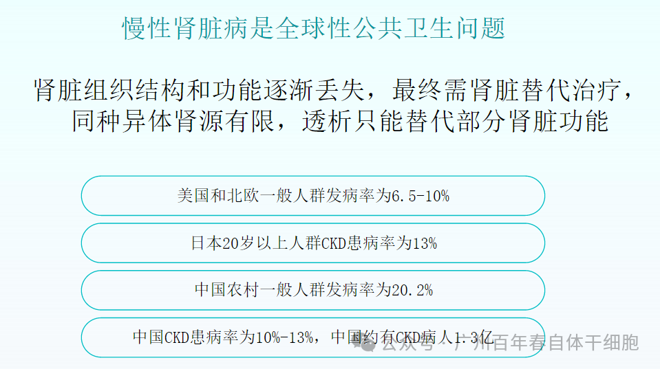
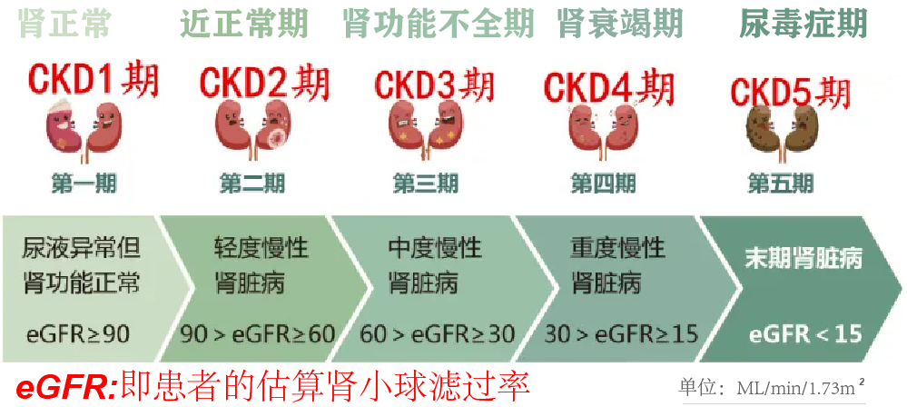
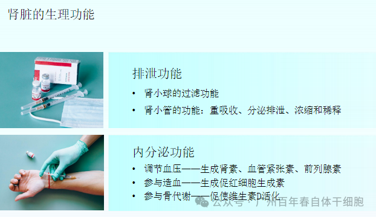
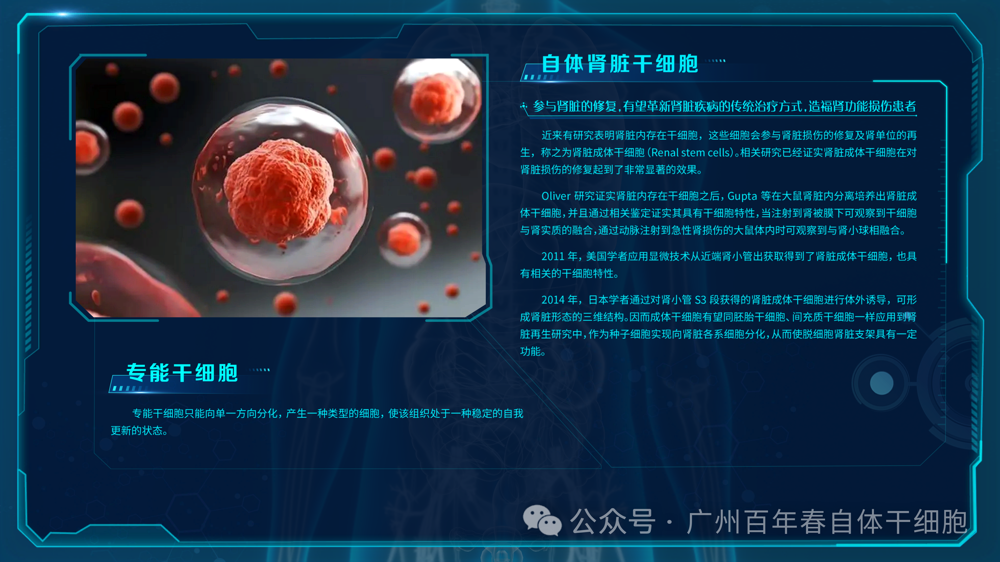
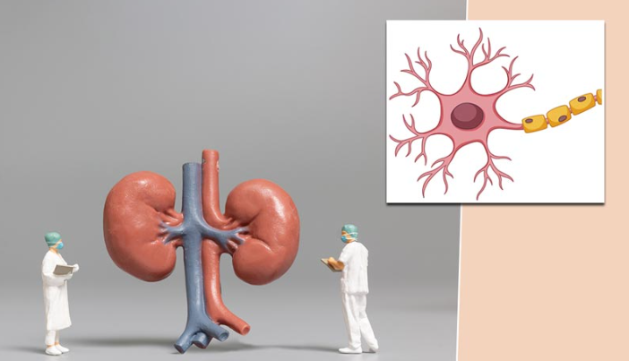
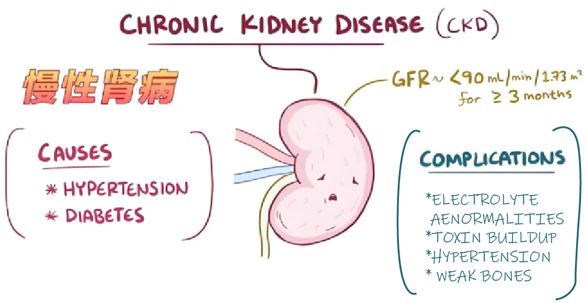
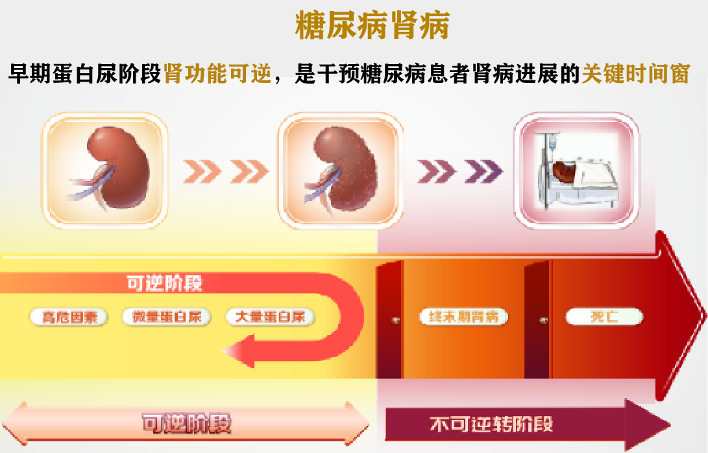
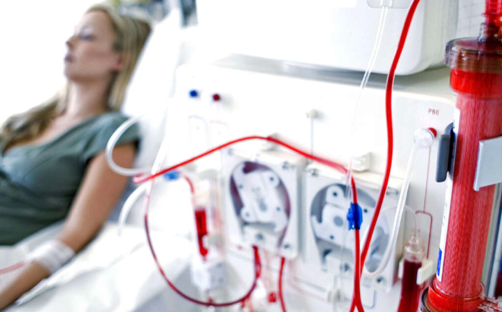

别等身体亮红灯！百年春自体干细胞，为您定制细胞级抗衰防线
2026-03-04

About Us
关于百年春
在全球范围内，肾脏病的发病率逐年上升，根据最新统计，中国的慢性肾脏病患者已超过1.2亿。但是肾脏损伤是不可逆的！传统治疗手段如透析和肾移植，尽管能够暂时缓解症状，但无法阻止肾功能的恶化。


但是近年来，干细胞治疗作为一种创新疗法，为肾病患者带来了新的希望！

肾病是肾脏病变的统称，指由各种原因引起肾脏结构和功能改变，从而导致肾脏病理损伤、血液或尿液成分异常等病症，主要表现为血尿、蛋白尿、水肿、高血压、贫血、腰痛、少尿等症状。一旦发展到终末期肾病，患者的生活质量将受到严重影响，透析和肾移植也是最常见的治疗选择。
那传统方式都搞不定的疾病，干细胞到底是治疗呢？

干细胞的特性就在于它可以再生分化的能力，通过直接注射或移植，促进肾脏组织的修复与再生。干细胞可分为自体干细胞和异体干细胞，前者来自患者自身，例如血液、脂肪、皮肤等，后者则来源于脐带、脐带血、胎盘等；干细胞中也分专能干细胞和多能干细胞，像常见的是自体间充质干细胞/自体造血干细胞（属于多能干细胞），专能干细胞的有自体肾脏干细胞。


干细胞通过多种机制发挥作用，包括：


慢性肾衰竭的积极改善
案例：李某，60岁女性，因长期慢性肾衰竭入院。血肌酐水平高达600μmol/L，伴随明显的贫血、头晕及乏力。经过两次自体干细胞输注后，血肌酐水平降至200μmol/L，伴随症状明显改善。
急性肾损伤的良好恢复
案例：张某，45岁男性，因急性肾损伤入院。血肌酐水平为400μmol/L，伴有明显的乏力、恶心等症状。经过一次自体干细胞输注后，血肌酐水平迅速下降至正常范围，症状完全消失。

糖尿病肾病的逆转之路
案例：针对15例糖尿病肾病患者进行干细胞治疗。治疗后，血压、血糖和肾功能指标均显著改善，生活质量得到提高。
狼疮性肾炎的改善希望
案例：12例狼疮性肾炎患者的研究中，治疗组患者在基础治疗上增加了干细胞治疗。治疗后，症状和肾功能指标明显改善，缓解率和肾功能改善率显著提高。
尿毒症患者透析显著减少
案例：王某，70岁男性，因尿毒症入院，血肌酐水平高达1000μmol/L，伴随心衰等症状。经过三次干细胞输注后，症状开始缓解，血肌酐水平降至800μmol/L，透析次数显著减少。

通过上面的应用案例，我们不可否认干细胞治疗对于各种肾脏疾病的正向反馈，可修复肾功能，减轻病症，甚至减少透析次数。当然干细胞也并非无所不能，在遇到肾脏疾病的发生时，还是需要尽早治疗干预，以防错过最佳治疗时期，理性看待。